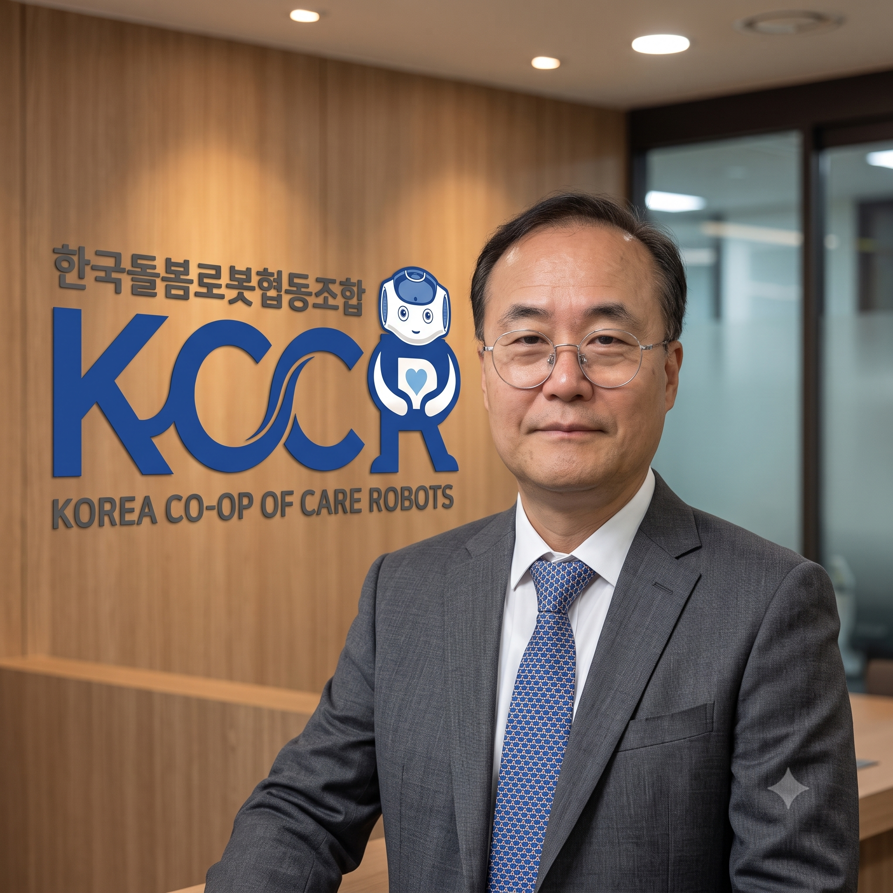

Shaping the Future of Care Robotics Together
KCCR brings together industry, academia, research, and clinical experts to alleviate caregiving burdens in an aging society.

President Kay (Kyunghwan) Kim, Ph.D.
Korea Co-op of Care Robots
Overcoming the Care Crisis Through
Robotics Technology and Solidarity.
Welcome.
I am Kay (Kyunghwan) Kim, the 2nd President of Korea Co-op of Care Robots (KCCR).
Korea is transitioning into a super-aged society at an unprecedented pace, facing acute challenges in elderly and disability care. Traditional approaches are reaching their societal and economic limits, demanding technological transformation.
Founded in July 2022 by industry, academia, and research specialists, KCCR aims to develop common core technologies, support commercialization, and actively contribute to national care policies, creating practical, sustainable solutions for all stakeholders.
We are also expanding our global alliance with international partners, including Japan and leading research institutes worldwide, to address demographic shifts collectively.
We warmly invite your interest and collaboration on this vital journey toward a sustainable care ecosystem.
2026
President of KCCR Kay (Kyunghwan) Kim
Core Initiatives & Capabilities
- Collaborative R&D & Core Technologies: Convergence platform connecting robot manufacturers and medical/rehabilitation researchers.
- Field Demonstration & Commercialization: Operating user-centric testbeds and driving safety and quality standardization.
- Policy Proposals & Institutional Support: Integrating care robots into long-term care insurance and leading national policy agendas.
- Global Alliance Expansion: Establishing global exchange and technical cooperation networks across Asia, North America, and Europe.